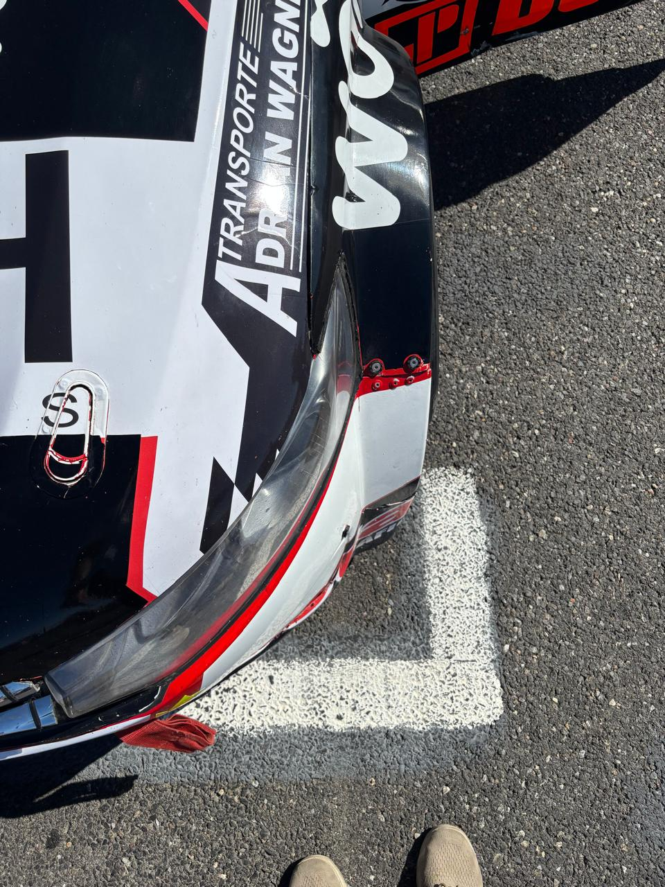
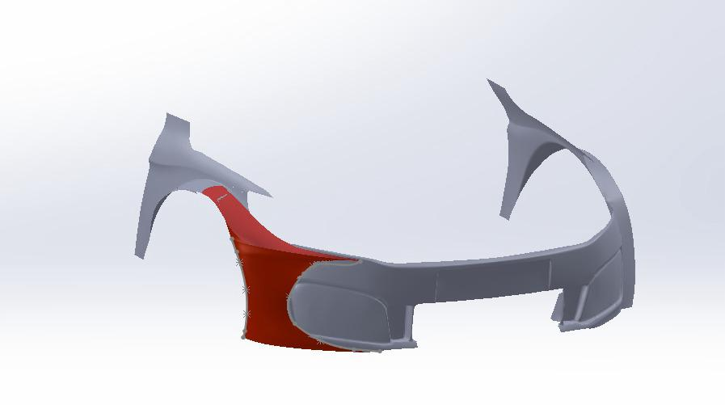
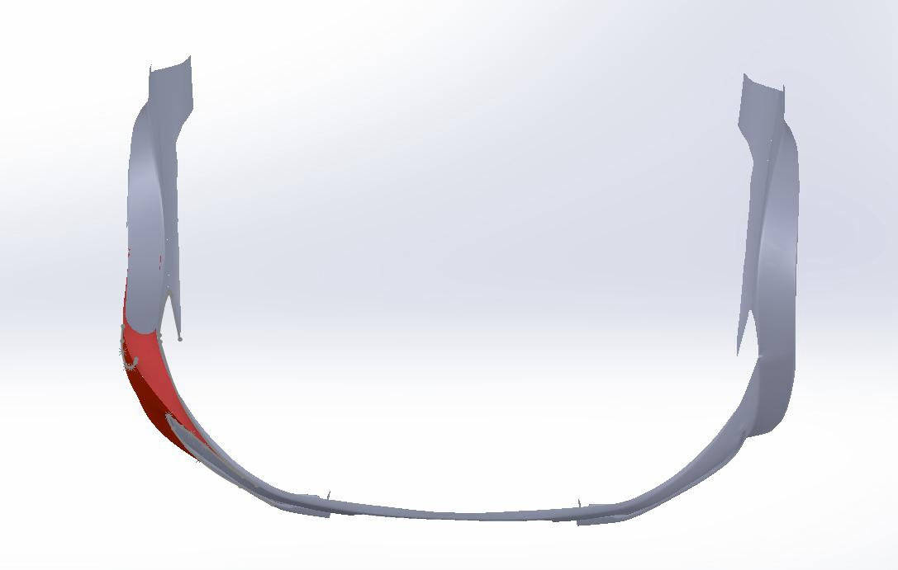
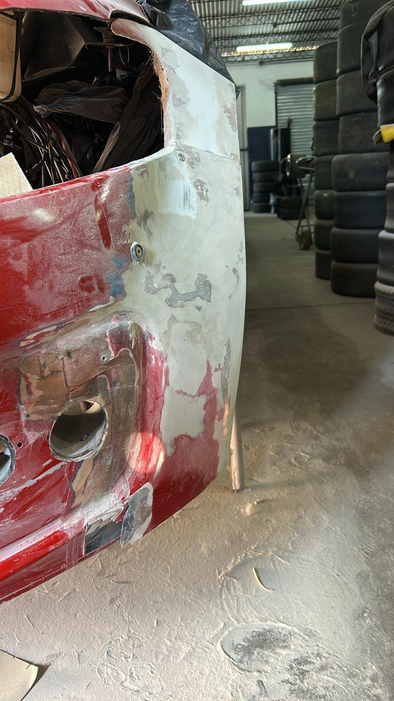
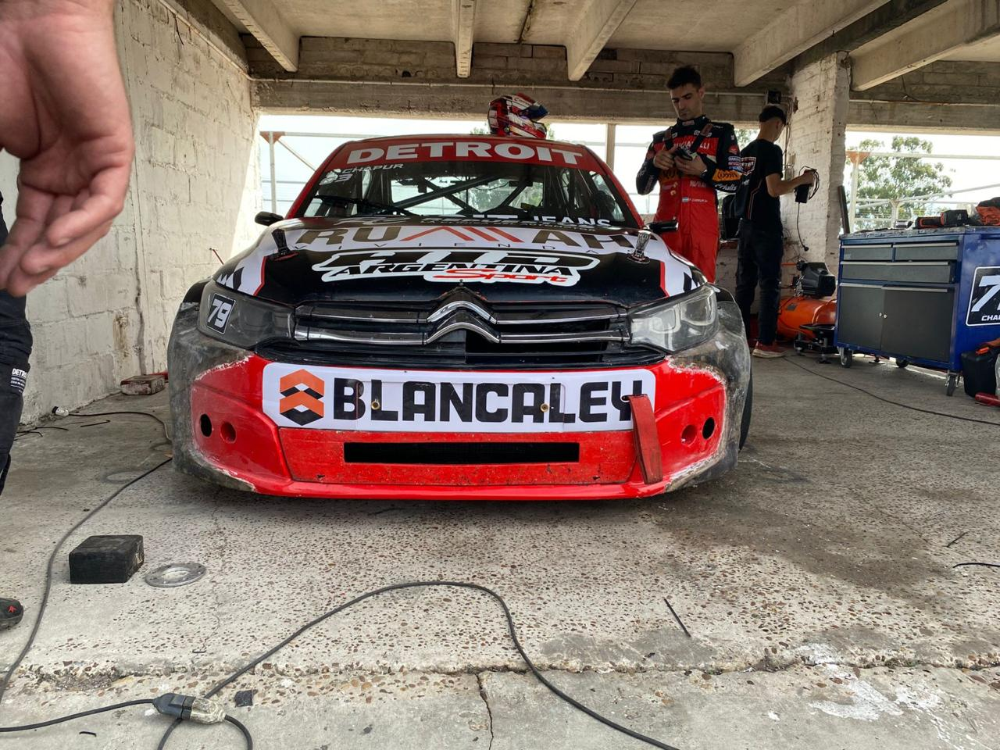
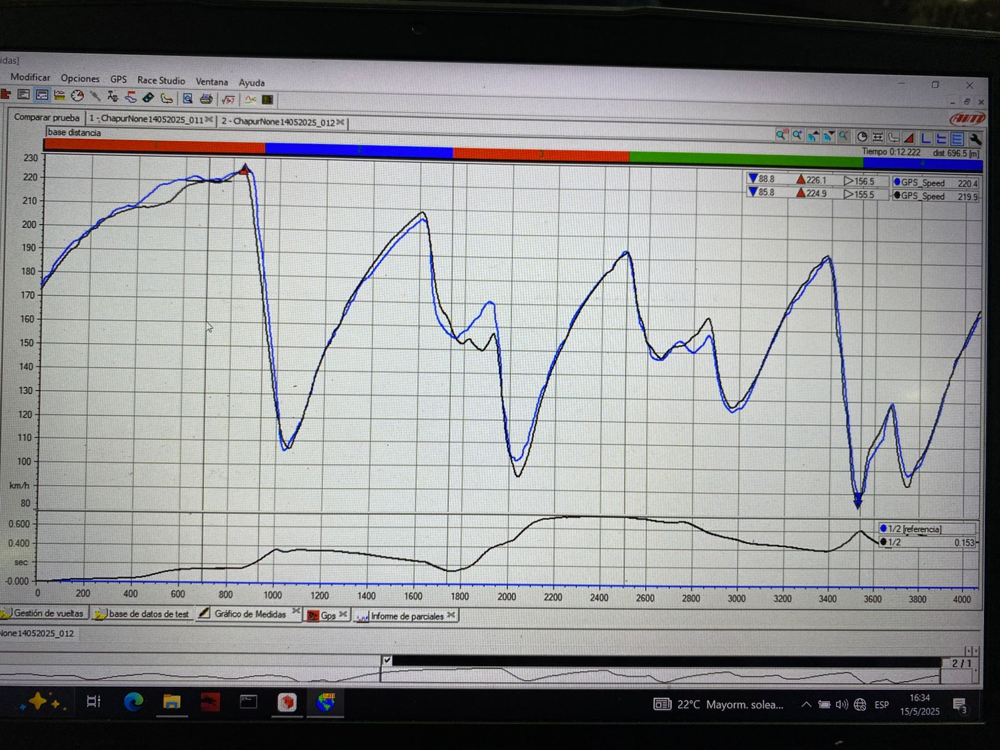

Turismo Nacional Front Nose Aerodynamic Redesign
Front-end redesign of a Turismo Nacional race car developed from trackside engineering observations through CAD surfacing, prototype support, fabrication, and experimental on-track validation.
Overview
This project originated during race weekend engineering work, where an opportunity was identified to improve the aerodynamic behavior of the car through a redesign of the front nose and adjacent fender surfaces. Starting from the original front-end configuration, the development progressed through concept definition, CAD redesign, fabrication support, implementation on the vehicle, and track validation.
Role and Contributions
My contribution combined junior trackside engineering support with hands-on design work. After identifying the potential for improvement, I participated in the redesign of the front-end geometry in SolidWorks, considering both aerodynamic intent and manufacturing feasibility. I also supported prototype development and followed the part through implementation and testing on the race car.
- Identified an aerodynamic improvement opportunity while working with the team during race events.
- Redesigned the front nose and connected front-end surfaces in SolidWorks.
- Balanced aerodynamic goals with manufacturing, assembly, and real track-use constraints.
- Supported prototype development through insert modeling and practical implementation.
- Followed the modified part through fabrication and installation on the vehicle.
- Participated in the experimental evaluation of the redesign using track data acquisition.
Design Process
One of the most valuable aspects of this project was experiencing the full engineering loop from track observation to validation. The task was not limited to proposing a new shape: it required generating feasible geometry, adapting it to the existing vehicle, supporting fabrication, and ensuring that the final solution could be tested under real competition conditions.
This made the project especially relevant from an engineering standpoint, because it connected design decisions directly with measurable vehicle behavior.
Experimental Validation
After implementation, the modified front-end configuration was evaluated through on-track data acquisition. The test results indicated a drag reduction, suggesting that the redesign moved in the intended aerodynamic direction. The most important outcome was the ability to link CAD development and fabrication work with real performance data from the car.
Gallery
The images below summarize the full development path: original front-end condition, CAD redesign of the nose assembly, fabrication progress, implementation on the car, and on-track validation through data acquisition.






Project Value
This experience strengthened my understanding of motorsport engineering as a process that connects race weekend observation, CAD development, prototype support, manufacturing, and experimental validation. It was also an important opportunity to contribute in a junior engineering role within a competitive racing environment, participating in a real vehicle development task with measurable technical results.